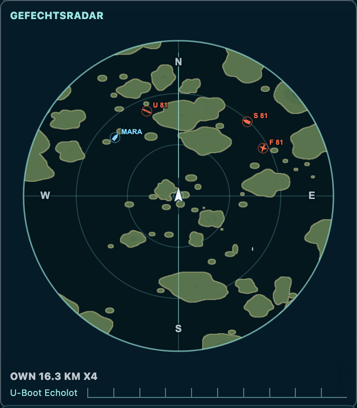
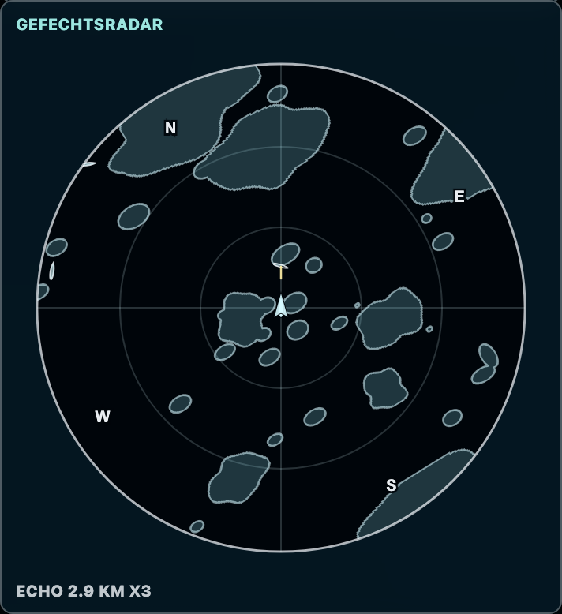
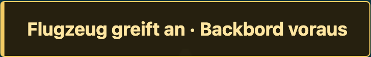

Das Sonar: deine Unterwasserübersicht
Dein Sonar sitzt links am Bildschirm in der runden Anzeige direkt unter der Landkarte, an derselben Stelle wie das Radar. Unterhalb der Sehrohrtiefe wechselt die Anzeige in eine einfarbige Unterwasserdarstellung. Sie zeigt Schiffs- und U-Boot-Konturen, auch getauchte U-Boote. Flugzeuge fehlen in dieser Ansicht. Getauchte U-Boote werden als Kontur dargestellt; Oberflächenfahrzeuge sind flächig gezeichnet.
Die hellen Sonarkonturen sind keine Freundfarbe. In dieser Ansicht gibt es nicht die gewohnte blaue und orange Unterscheidung. Ordne ein Ziel anhand deiner vorherigen Beobachtung, Karte und Spielsituation ein, bevor du feuerst. Die Form und Richtung helfen bei der Orientierung, garantieren aber noch keinen Treffer auf passender Tiefe.
Auch laufende Torpedos sind in der Unterwasseranzeige zu sehen. Ein Kontakt direkt voraus kann über oder unter deiner Schusstiefe liegen. Deine Torpedos suchen sich ihr Ziel nicht selbst und gleichen keinen Tiefenunterschied aus.
Oberflächenradar


Unterwasseranzeige


Die tatsächliche Tiefe zählt
Beim Tauchen ändert sich die Aufklärung erst mit deiner wirklichen Tauchtiefe. Kurz „Auftauchen“ auszuwählen gibt dir nicht sofort wieder das volle Oberflächenradar. Das Boot muss tatsächlich bis zur Sehrohrtiefe aufsteigen. Plane dafür Zeit ein.
Erst die Farbe, dann der Schuss
Im farbigen Radar ist Hellblau dein Team, Orange-Rot der Gegner. Dein eigenes Boot ist auf der Karte weiß hervorgehoben. Diese Zuordnung gilt aus deiner Sicht – sie hängt nicht davon ab, welche Flotte du beim Start gewählt hast. Schiffs-, U-Boot- und Flugzeugsymbole helfen, die Kontakte auseinanderzuhalten.
Ein kurzer, heller Strich auf dem Radar kann ein laufender Torpedo sein. Beobachte seine Bewegung: Zeigt die Spur auf dich, ist Ausweichen wichtiger als der nächste eigene Schuss. Die Anzeige hat eine begrenzte Reichweite; ein leerer Ausschnitt bedeutet nicht, dass die ganze See frei ist.
Torpedo · vergrößerter Radarausschnitt
- 1Hellblauer Kontakt: eigenes Team.
- 2Orangefarbener Kontakt: Gegner.
- 3Kurzer heller Strich: laufender Torpedo.
Karte für den Plan, Radar für den Augenblick
Die Landkarte zeigt Küsten, Inseln, markante Punkte und deine eigene Position. Andere Fahrzeuge suchst du im Radar und im Blick nach draußen. Nutze sie, um freie Durchfahrten und einen Anfahrtsweg zu finden. Mit dem Kartenzoom veränderst du den Ausschnitt. Helle Ringe markieren Leuchttürme, rote Dreiecke Vulkane – diese Zeichen sind Landmarken, keine gegnerischen Fahrzeuge. Merke dir den Sektor deines Ziels, damit du es nach einem Positionswechsel wiederfindest.
Das Radar zeigt die unmittelbare Lage um dein Boot. Dreht das Boot, verändert sich die Darstellung relativ zu deinem Kurs. Halte deshalb Karte, Blick nach draußen und Radar zusammen: Eine Insel, die auf der Karte als Deckung taugt, kann deinem Torpedo genauso im Weg liegen.
Automatische Warnungen: jetzt nach draußen schauen
Die gelben Hinweise erscheinen von selbst in der unteren Hälfte der Spielansicht. Du musst nichts melden und keine Taste dafür drücken. Sie gelten für das ganze Schiff, unabhängig davon, wer welche Position besetzt. Ein Hinweis richtet weder ein Geschütz aus noch feuert er für dich.
„Sehrohr gesichtet“ meldet ein erkanntes feindliches U-Boot auf Sehrohrtiefe. Die Erkennung berücksichtigt Entfernung, Geschwindigkeit, die tatsächliche Sichtbarkeit des Sehrohrs und verdeckende Inseln. Langsame U-Boote können näher herankommen, bevor sie auffallen; tief getauchte U-Boote lösen diese Sichtwarnung nicht aus.
„Flugzeug greift an“ meldet einen erkannten Angriffsanflug auf dein Schiff, schon vor dem Abwurf. Ein bloß vorbeifliegendes oder befreundetes Flugzeug löst den Hinweis nicht aus. Mehrere Hinweise können gleichzeitig erscheinen; ein durchgehend erkannter Kontakt wird nicht jede Sekunde neu gemeldet.
Auch als U-Boot-Fahrer erhältst du die Warnungen. Aufgetaucht kannst du vor einem Flugzeugangriff gewarnt werden; aufgetaucht und auf Sehrohrtiefe kannst du ein feindliches Sehrohr gemeldet bekommen. Tief unter Wasser entstehen keine neuen Sichtwarnungen: Dort hilft deine Unterwasseranzeige. Prüfe bei einer Warnung die Lage und entscheide, ob du ausweichst, tiefer tauchst oder den Gegner suchst.

Angriffsanflug


Wer spielt mit – und wer führt?
Unter Players findest du die menschlich geführten Schiffe: Kennung, Schiff, Wertung, Richtungsanzeige und Kartensektor. Die Liste ist keine vollständige Aufstellung aller Fahrzeuge. Freie Schiffe können von Bots gesteuert werden; sie erscheinen deshalb nicht als eigene menschliche Spieler.
Die Zahl bei einem Spieler ist eine Wertung, kein reiner Trefferzähler: Ein versenkter Gegner bringt +1, ein versenktes Schiff des eigenen Teams −2; selbst versenkt zu werden kostet −3. Ein sorgfältig gewählter Schuss ist also mehr wert als blindes Dauerfeuer.

- 1Eigenes Boot auf der Karte.
- 2Eigener Kartensektor.